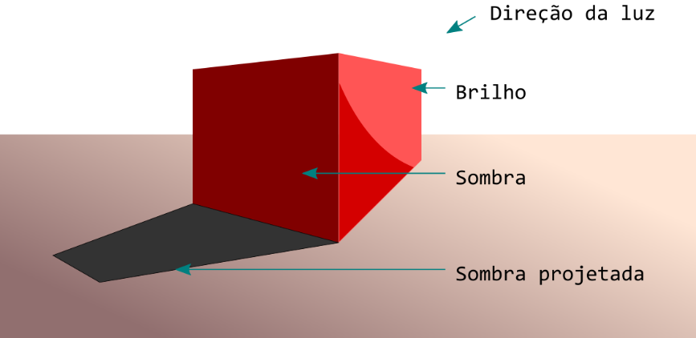
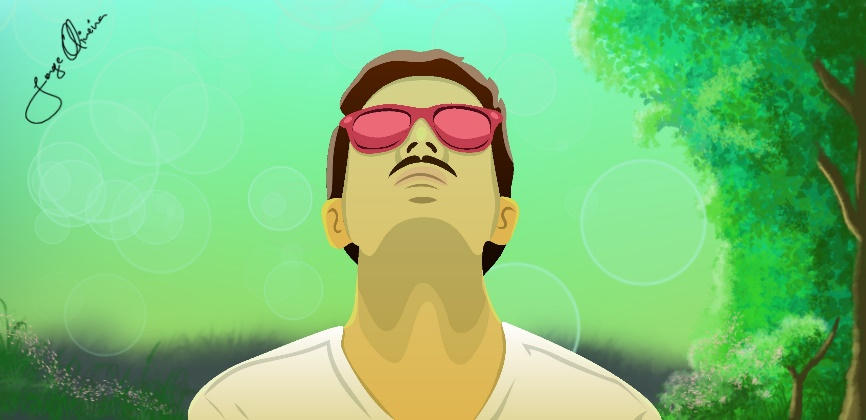

Sombra e brilho são utilizados para dar sensações de profundidade, perspectiva e realismo a desenhos, e existem diferentes formas de utilizá-los. Sombras e brilhos podem ser criados tanto utilizando variações de cor, como transparências em cores mais escuras ou mais claras que o desenho.
Desenho vetorial simulando sombra e brilho:
Um desenho vetorial pode possuir sombras e brilhos sobre o objeto, ou sombras projetadas do objeto sobre uma superfície. Geralmente essas sombras são feitas com curvas independentes ou com gradientes no próprio preenchimento do objeto. Antes de se aplicar sombras e brilhos é necessário definir ou identificar onde está ou onde estão as fontes de luz do desenho, que podem ser uma ou mais. Quanto mais fontes de luz, mais complexo será o jogo de sombras e brilhos incidentes sobre o desenho.
Note os efeitos de brilho e sombra usados tanto no desenho vetorial quanto na pintura de fundo:
